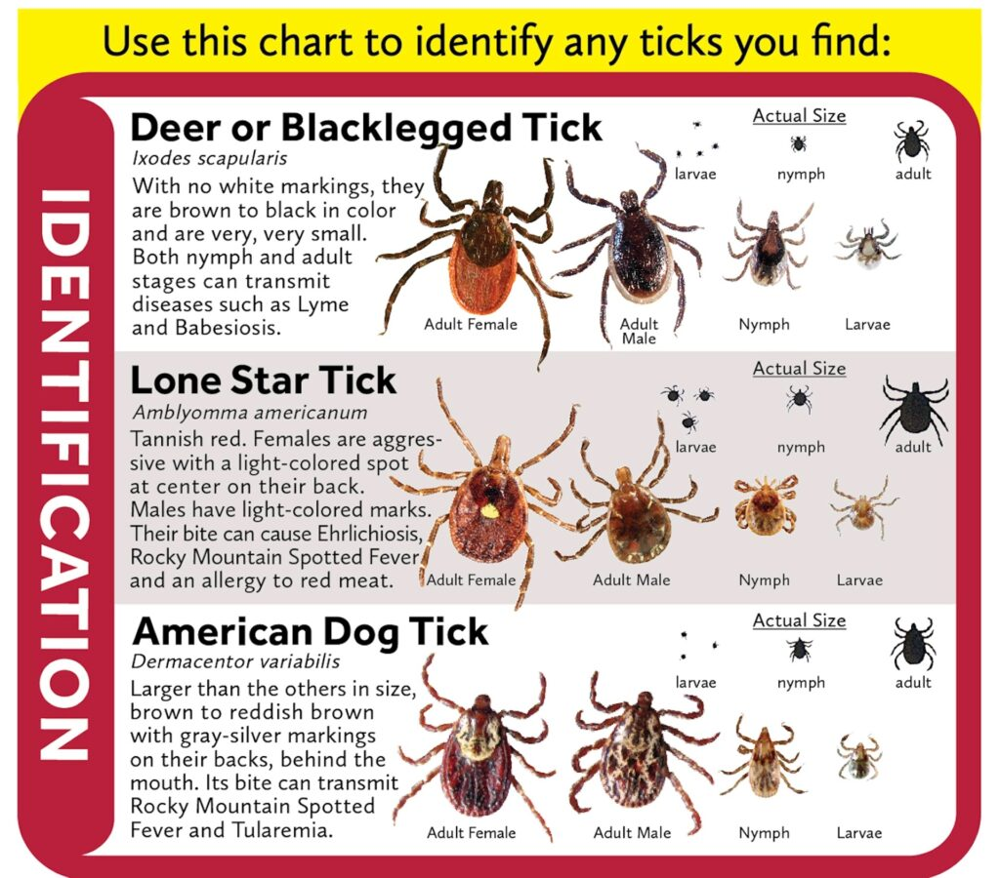
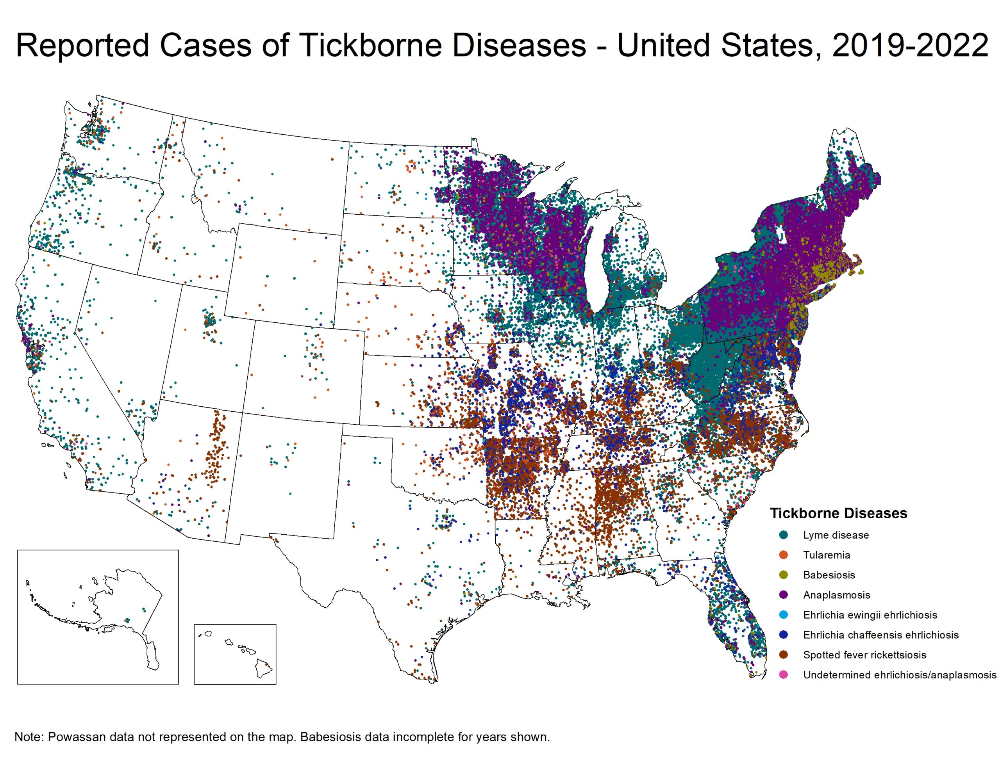
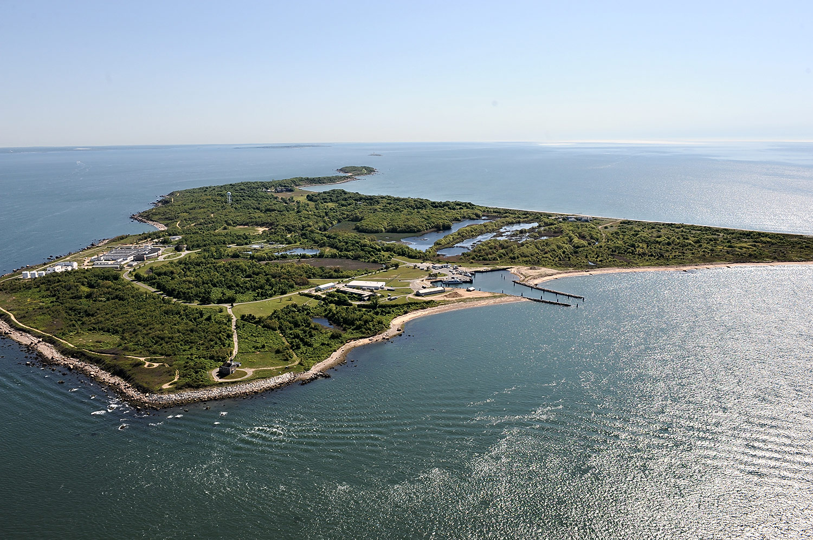
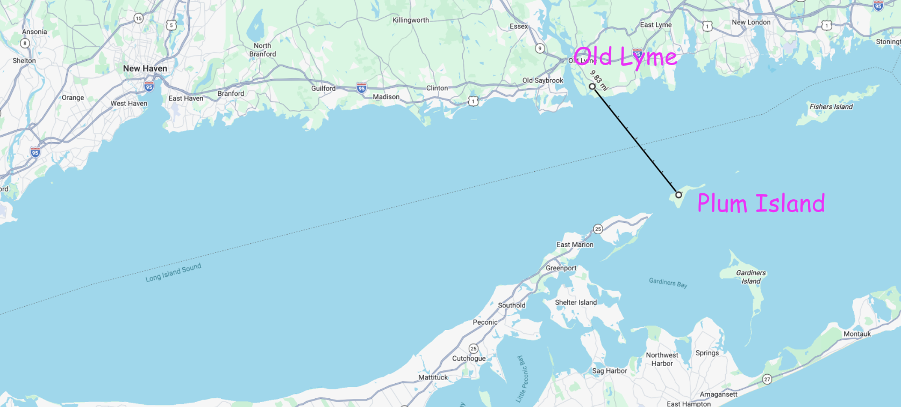
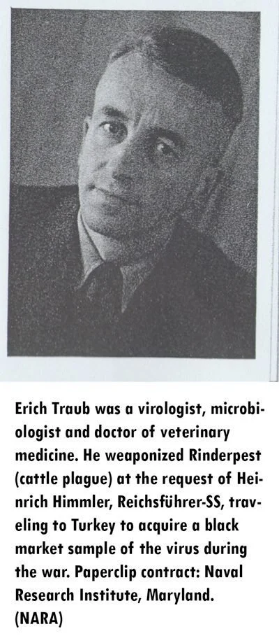
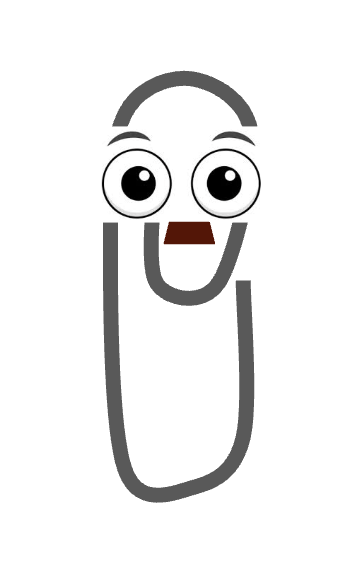
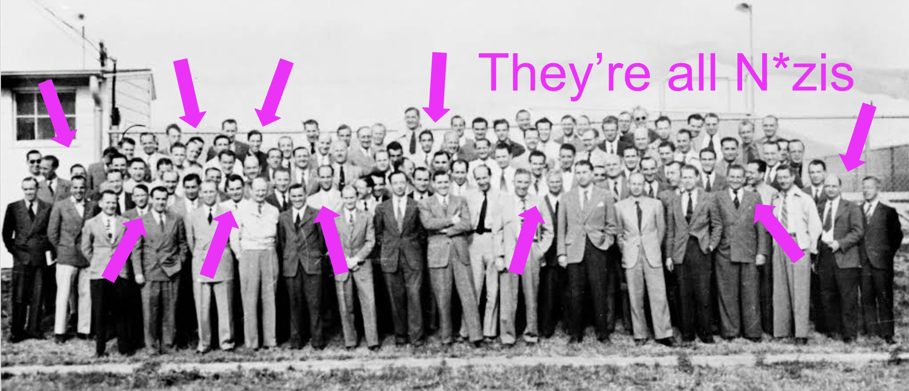
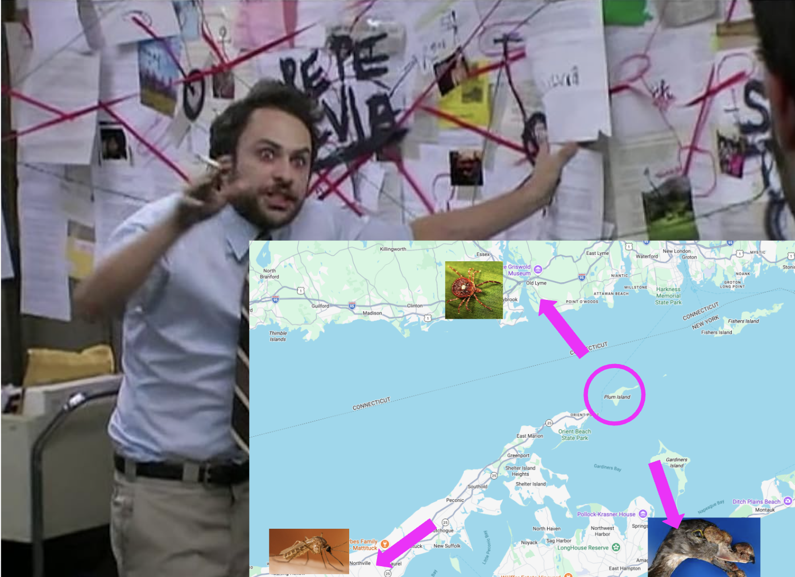

| Disease | First Discovered | First in North America | Research at Plum Island |
|---|---|---|---|
| Duck Enteritis (Duck Plague / DVE) |
1923 — Netherlands Spent 44 years in Europe. Never crossed the Atlantic. |
January 1967 Suffolk County, Long Island, NY (Same county as Plum Island) |
✓ Yes — being actively studied at the time |
| Lyme Disease | 1880s — Germany Skin rash first described by Dr. Alfred Buchwald. Bacteria identified in 1982. |
Mid-1970s Old Lyme, Connecticut (10 miles from Plum Island) |
✓ Tick and vector research ongoing |
| West Nile Virus | 1937 — Uganda 62 years in Africa, Middle East & Asia. Had never appeared in the Western Hemisphere. |
August 1999 New York City area Weeks prior: 18 horses on 13 farms on the North Fork of Long Island died of unknown cause |
✓ Exotic pathogen research ongoing |